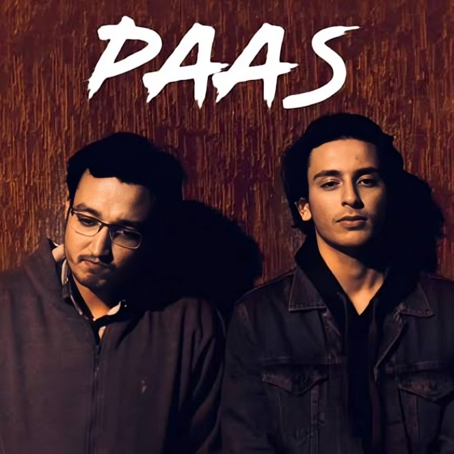
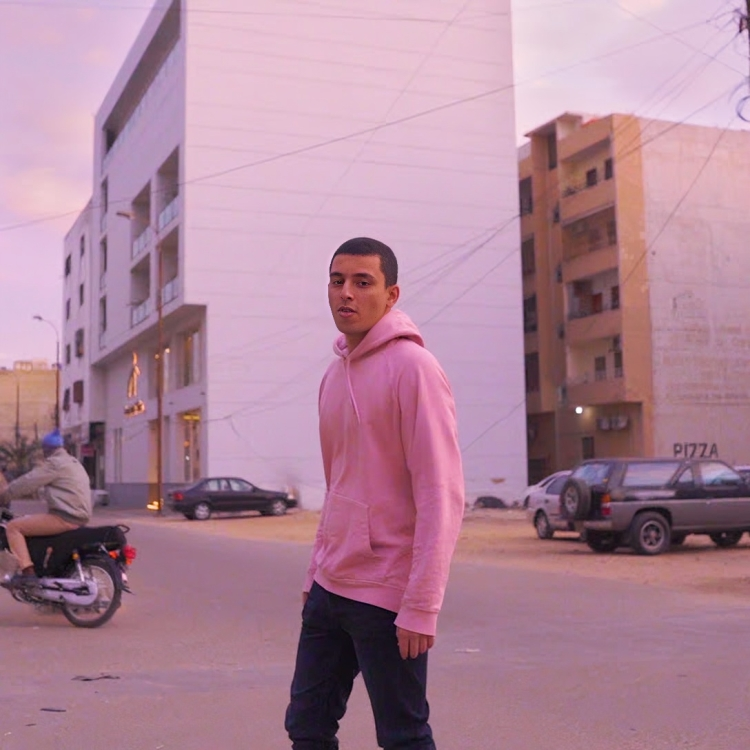
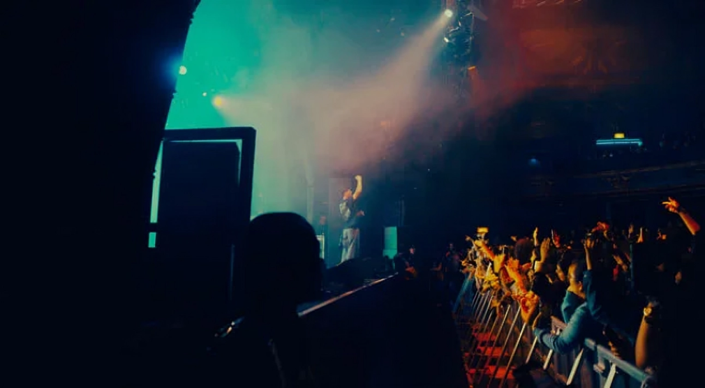
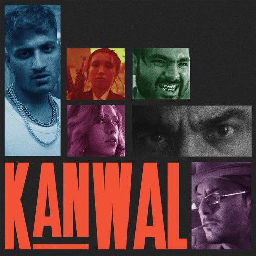

GILGIT
The beginning.
Before the songs, before Karachi — a childhood in the north, among mountains that don't hurry for anyone.
01 / 11 — GILGIT
The beginning.
Before the songs, before Karachi — a childhood in the north, among mountains that don't hurry for anyone.
02 / 11 — KARACHI
A new city.
A different path.
03 / 11 — MEDICINE
A structured path, chosen early — the one that was supposed to come first.
04 / 11 — EXPERIMENT
Melodies written in the margins. A guitar picked up between rotations. Nothing declared yet — just noticed.
05 / 11 — PAAS

The first release.

06 / 11 — AISAY KAISAY
The breakthrough.
A song that pushed his music to a much bigger audience.
07 / 11 — GROWTH

08 / 11 — GLOBAL
09 / 11 — MY TOP 3
Three Hasan Raheem songs I keep coming back to.
Open and unpredictable — the record that lets the chaos show.
Listen on YouTube Music
Quiet, unhurried — the one that rewards a second listen.
Listen on YouTube MusicA search, still going — fitting, for where the story is now.
Listen on YouTube Music10 / 11 — TODAY
New music, a global tour, an audience still growing — the present tense of an ongoing career.
11 / 11 — WHAT REMAINS
A different path doesn't always mean a wrong path.